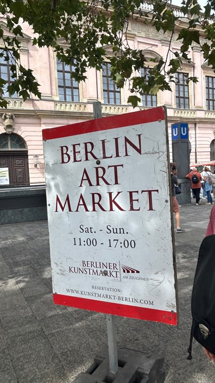
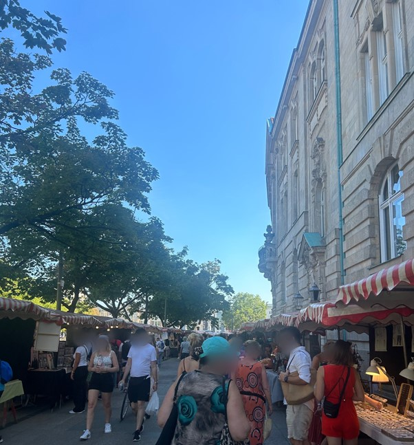
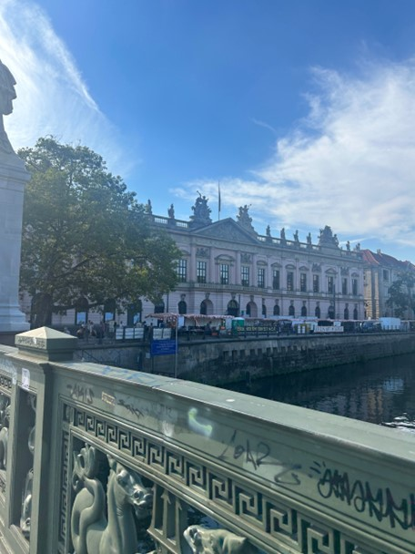
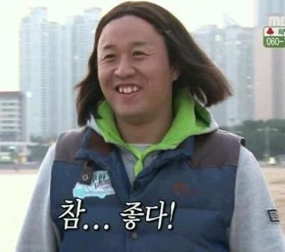
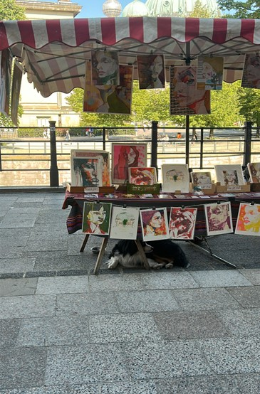
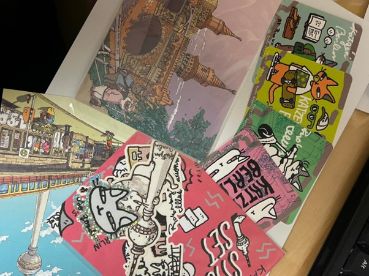

안녕하세요 여러분.
여러분은 예술 감상을 즐기시나요?
아기자기한 작품들을 소장하는 것을 좋아하시나요?
그렇다면 오늘의 주제를 주목해보아도 좋습니다!
오늘의 주제는 바로~~~~~~

'Berliner Kunstmarkt' 베를린 아트마켓입니다!
‘베를린 아트마켓’은 지난 번 설명해드린 박물관 섬의 옆 다리를 건너 위치한
여러 개의 부스로 이루어진 베를린의 예술 작품 시장입니다.

매주 주말 11시 ~ 17시 열리는 아트마켓에서는 그림 작품뿐만 아니라 스티커,
엽서, 장신구, 그릇 등 다양한 분야의 작품들을 구입할 수 있습니다.
방문했을 당시 그 길이나 크기가 엄청난 편은 아니라고 느꼈습니다. 하지만
길거리에서 부담없이 구경하고 맘에 드는 작품을 발견하면 바로 구입할 수 있어서
오히려 좋다고 생각했습니다!

사람이 붐빌 땐 정말 정신이 없으니 비교적 한산한 시간대에 방문하시고 천천히
둘러보시길 추천합니다!
건물 밑을 보시면 길게 늘어져있는 아트마켓의 부스를 확인할 수 있는데요. 한
눈에 담을 수 있을 만큼의 규모로 유지되고 있습니다.
이쯤되면 어떤 사람들이 베를린 아트마켓에서 물건을 판매하는지 궁금한데요.
베를린 아트마켓 공식 홈페이지를 방문하시면, 아트마켓에 대한 상세한 설명과
함께 아트마켓 전시자의 자격에 관한 공지가 되어 있습니다. 주로 자신만의
작품을 창작할 것, 시장의 성격과 일치하는 작품을 창작할 것 등등의 자격과 함께
주의사항이 명시되어 있습니다.
아트마켓에서 제공하는 온라인 양식에 따라 자신의 작품을 소개하고 이메일로
지원이 가능하다고 합니다.
이처럼 베를린 아트마켓은 인기 많은 화가들만 참여할 수 있는 제한적 공간이
아닌, 자신의 작품을 창작하는 여러 예술가들에게 기회를 줌으로써 대중과 만날
수 있는 자리를 만들고 있습니다!

매번 새로운 작가의 작품들을 전시하고 있어 대중들은 다양한 작품을 구경할 수
있다는 장점이 있고 무명의 예술가들에겐 베를린 아트마켓을 통해 자신의
작품들을 선보이고 또 다른 기회를 얻어갈 수 있다는 장점이 있는 것 같습니다
^_^
정말 예쁘고 아름다운 작품들이 많아서 참 재미나게 구경했었던 기억이 나네요.
그 자리에서 바로 그림을 그리고 계시는 분들도 있었습니다.

감각적이고 멋진 작품들에 빠져 홀린 듯 카메라를 들게 되는 곳이지만, 촬영
시에는 반드시 양해를 구하고 촬영해야 한다는 점 잊지 마세요!

제가 베를린 아트마켓에서 사온 스티커와 엽서들입니다! 베를린의 정취가 물씬
묻어있어 볼 때마다 좋은 추억이 떠오르는데요. 여러분들도 베를린 아트마켓에
방문하시고 좋은 경험하셨으면 좋겠습니다! ^_^